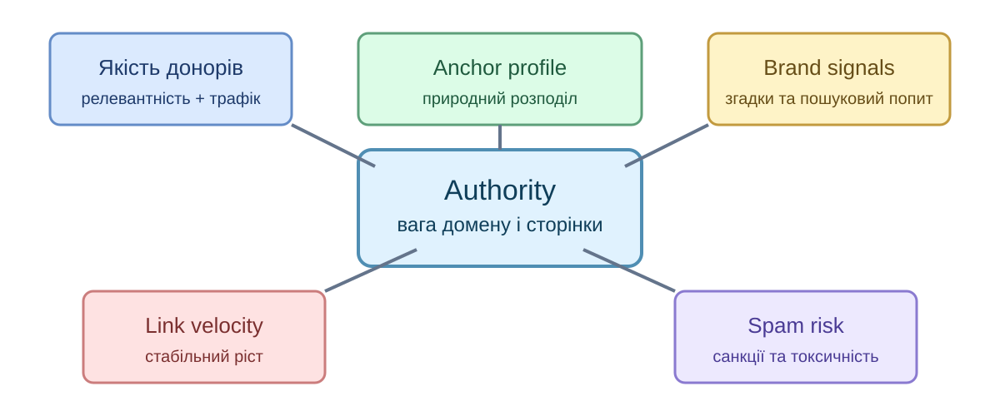
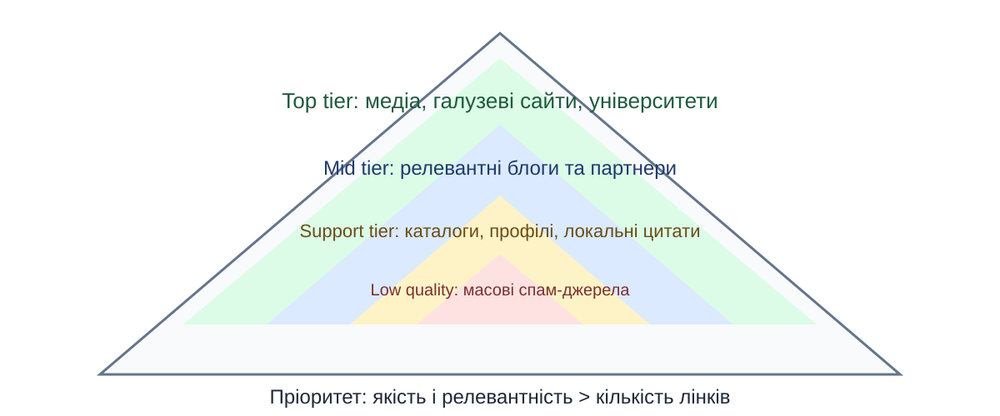
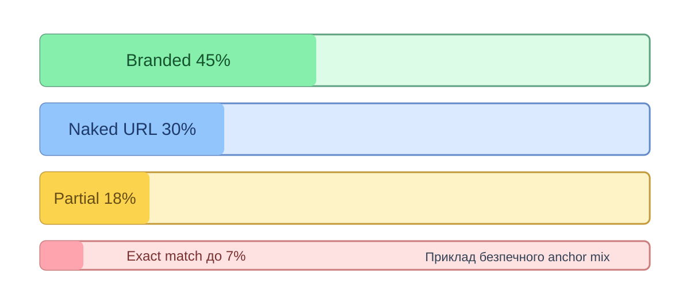
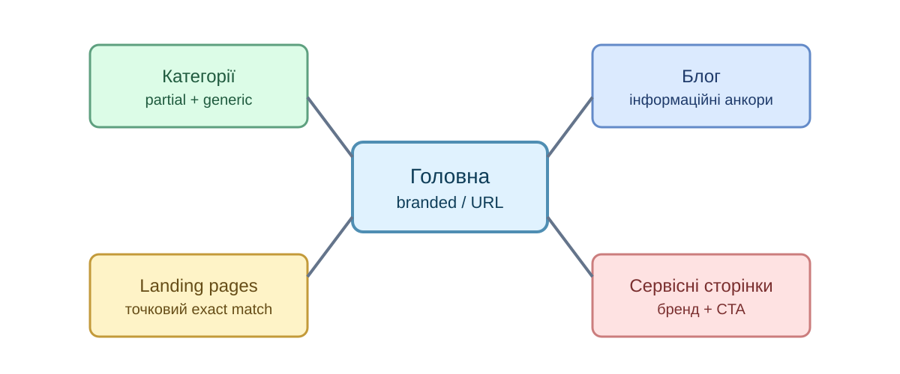
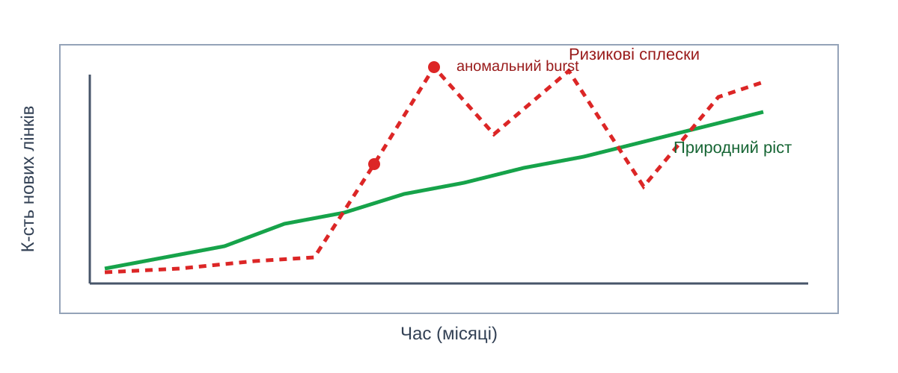
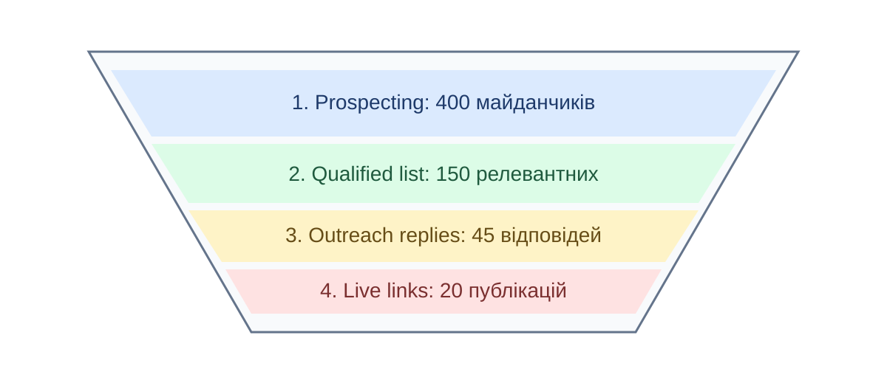
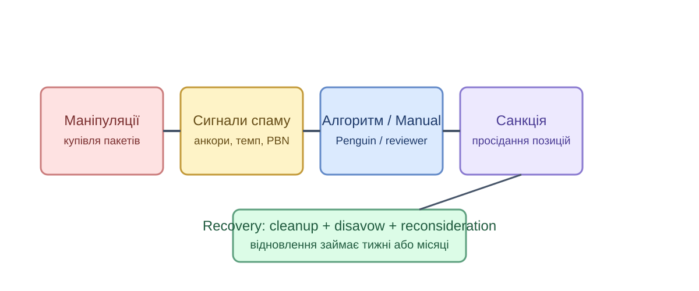
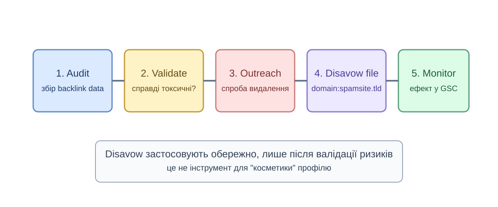

Off-page SEO - це робота із зовнішніми сигналами, які формують довіру до сайту.

| Тип | Атрибут | SEO-вплив | Коли використовують |
|---|---|---|---|
| Dofollow | без rel / rel="follow" | Передає найбільше сигналів | Редакційні та партнерські згадки |
| Nofollow | rel="nofollow" | Не гарантує передачу ваги | Коментарі, зовнішні неперевірені URL |
| UGC | rel="ugc" | Сигнал про user-generated контент | Форуми, відгуки, Q&A |
| Sponsored | rel="sponsored" | Маркує платне розміщення | Реклама, нативні інтеграції |

Anchor strategy - це контроль текстів посилань, щоб профіль виглядав природно і тематично.
| Тип анкора | Приклад | Ризик | Рекомендація |
|---|---|---|---|
| Branded | SeoLab, seolab.ua | Низький | Основна частка профілю |
| Generic | тут, читати далі | Низький | Розбавлення профілю |
| Partial match | гайд з лінкбілдінгу | Середній | Для тематичних статей |
| Exact match | купити SEO послуги | Високий | Мінімально і точково |




Санкції виникають, коли посилальний профіль виглядає як маніпуляція ранжуванням.

